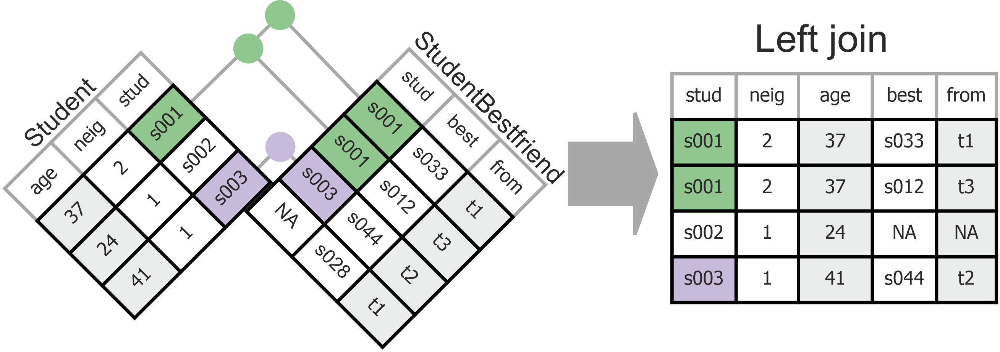
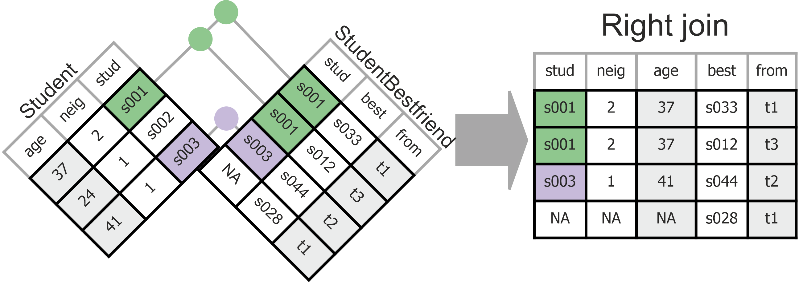
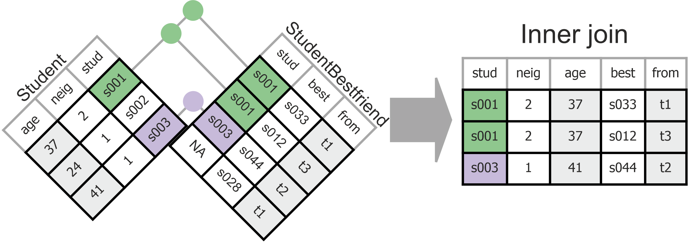
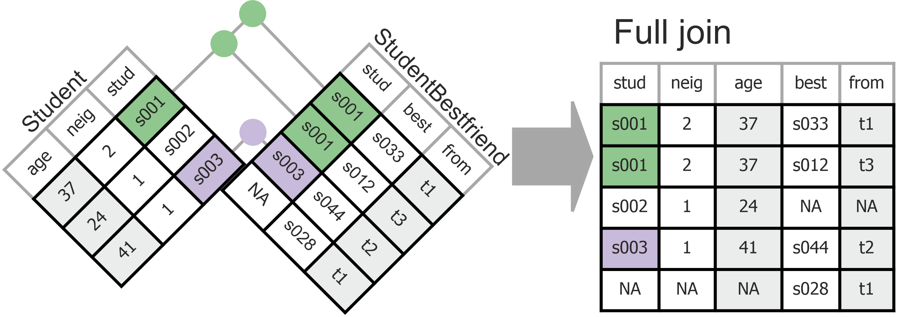

Overview
- Q&A
- Four principles of tidy data
- Principle 3: Each variable must have its own column.
- Principle 4: Each value must have its own cell.
- Connecting different types of data through Joins
Q&A
ADD DEPENDING ON WHETHER THERE ARE QUESTIONSD
Tidy Data: EveRything In One Place
- Rules for optimal data structure designed for efficient and consistent data storage.
- Key goals are to facilitate easy storage and (re-)use of complex datasets by
- Storing data in a way that conserves space,
- Storing data in a way that is easily understandable by others,
- Preparing the dataset for common operations (e.g. merging different types of data) given the characteristics of the R programming language.
Four Principles of Tidy Data
- Each type of case must have its own tibble (table).
- Is the same information repeated in different rows?
- Split the tibble; transfer the info on each type of case to a
separate tibble.
- The book R for Data Science (2nd Edition) does not discuss this much. See Chapter 19 on Joins.
- Is the same information repeated in different rows?
- Each observation must have its own row.
- Do different variables address the same information?
- Stack repeated information.
- Don’t allow values as columns.
- Do different variables address the same information?
- Each variable must have its own column.
- Is there a variable with values that should be variables by themselves?
- Don’t stack different types of information in the same column.
- Spread information over different columns.
- Each value must have its own cell.
- Does a variable contain more than one piece of information?
- Don’t cram more than one piece of information in a cell.
- Split the variable.
Last time, we discussed principles 1 and 2. Today, we will focus on principle 3 and 4.
3. Each variable must have its own column.
Inspect the tibble StudentBestfriend that you created
previously.
Is there a variable with values that should be variables by themselves?
| student | bestfriend | bfperiod | bfwave |
|---|---|---|---|
| s001 | s033 | from | t1 |
| s001 | s033 | to | t3 |
| s003 | s063 | from | t2 |
| s003 | s063 | to | t2 |
| s004 | s089 | from | t3 |
| s004 | s089 | to | t3 |
| s004 | s127 | from | t3 |
| s004 | s127 | to | t3 |
| s005 | s035 | from | t1 |
| s005 | s035 | to | t3 |
Values in variable bfperiod are variable names:
from: wave in which the student mentioned a peer as best friend for the first time;to: idem, for the last time (to).- The actual value for
fromandtoare stored in thebfwavevariable.
Tidy Rule 3. Each variable must have its own column.
Tidy data: tibble with variables fromand to
instead of bfperiod and bfwave.
| student | bestfriend | from | to |
|---|---|---|---|
| s001 | s033 | t1 | t3 |
| s003 | s063 | t2 | t2 |
| s004 | s089 | t3 | t3 |
| s004 | s127 | t3 | t3 |
| s005 | s035 | t1 | t3 |
| s006 | s136 | t3 | t3 |
Replace the StudentBestfriend tibble by a tibble with
variables from and to instead of
bfperiod and bfwave.
StudentBestfriend <- StudentBestfriend |>
# students without best friend are dropped
____( ____ ) |>
# spread the bfperiod values into new variables
pivot_wider( ____ )
# Show result.
StudentBestfriend# Drop cases (filter()) with missing values on bestfriend (function is.na()).# Within pivot_wider() function, use arguments: id_cols, names_from, and values_from.# Check out the vignette: issue the R command `vignette("pivot")` in RStudio.4. Each value must have its own cell.
Split a variable containing more than one piece of information.
Trivial example, variable alcohol with values containing
both a numeric code and a label:
1 none;2 once or twice a year;3 once a month;- and so on.
Write tidyverse code to split the alcohol variable in
the StudentWave tibble into a numeric variable
alcohol_code and a character variable
alcohol_label.
Note: Send the results to the screen, do not store it in a new data object (so the code checker can do its work).
StudentWave |>
separate_wider_delim()# Within separate_wider_delim() function, use arguments: col, delim, names, and too_many.# The names argument requires a vector (c()) with names for the new variables to be created.# The delimiter should be a space (' '). In a first step, use "too_many='debug'" to check which cases produce issues with this delimiter. Then decide what to do with those cases in a second step using too_many='merge' or too_many='drop'Overview Data Tidying Steps
- Determine the initial structure of your dataset.
- What are they primary keys? Are there duplicated rows? If so, why?
- What violations of the tidy data principles can you see?
- Address any issues:
- Start with Principle 1 (redistributing data to different tibbles if necessary)
- Continue with Principle 2 (pivot_longer)
- Finish by addressing issues for Principle 3 and 4
- Confirm and document the new structure of your dataset.
- What are the primary and foreign keys of the final data set?
- How can different data sources be joined?
This concludes data tidying.
Meet the Experts
- You need to know about and apply all tidy data principles in your Group Data Project.
- To help you get there, we will engage in peer-learning.
HOMEWORK BEFORE SESSION 5: Become an expert in 1 out of the 4 tidy data principles.
“Becoming an expert” means:
- Re-visit the tidy data principle in the book and course materials.
- Apply it to one of your Data Project data sets.
- Produce 2 PowerPoint slides (use the template in Session 5 module on Canvas).
Slide 1: explain the tidy data principle in your own words, using 3 questions:
- WHAT type of data structure the tidy data principle refers to (What does untidy and what does tidy data look like?)
- HOW the tidy data principle can be implemented using R code (What function(s) do you use?).
- WHY the tidy data principle creates tidy data that is easier to work with than untidy data.
Slide 2: visualize the application of the tidy data principle to your Group Data Project dataset:
- Include a screenshot of the data (only relevant variables) in it’s untidy form.
- Include a screenshot of the data in it’s tidy form.
- Include the R code you used to tidy the data.
Who becomes an expert in what?
Joins: Combining Different Data Sources
As a result of tidying the GlasgowFriends tibble, we now
have several tibbles:
Student,StudentWave,StudentWaveFriend,StudentBestfriend,Neighbourhood.
Every piece of information is now stored in just one spot, which is efficient and least error prone.
However, when we want to analyze data, we may need information from different tibbles. To this end, tidyverse offers us four join functions:
left_join()right_join()inner_join()full_join()
These functions may yield different results, most notably, different numbers of cases.
Use the below code box to join the Student and
StudentBestfriend tibbles with each of the four joins.
- Do you get the same number of cases (rows) with all joins?
- Compare the number of cases with those of the
Studenttibble (160 rows) and theStudentBestfriendtibble (236 rows). Why is it equal, larger, or smaller than in the original tables?
# Select different join types. Also switch the two tibbles.
Student |>
left_join(StudentBestfriend, by = "student")
# Note the resulting number of cases in the bottom-left of the table.# Join the two tibbles, using `student` as key.
# Start, for example, with a left join:
Student |> left_join(StudentBestfriend, by = "student")Graphical examples of what happens with the four different joins:
- A left join that joins
StudentBestFriendtoStudent:Student |> left_join(StudentBestfriend, by = "student")

- Each row (case) in the first (left) tibble is preserved in the resulting tibble.
- In addition, each row in the second (right) tibble with a match in the first tibble is preserved.
- A right join that joins
StudentBestFriendtoStudent:Student |> right_join(StudentBestfriend, by = "student")

- Like a
left_join()but now with the tibbles reversed.
- An inner join that joins
StudentBestFriendtoStudentor the other way around:Student |> inner_join(StudentBestfriend, by = "student")StudentBestfriend |> inner_join(Student, by = "student")

- Only rows with key values that appear in both tibbles are preserved.
- A full join that joins
StudentBestFriendtoStudent:Student |> full_join(StudentBestfriend, by = "student")

- All rows of both tibbles are preserved.
Check the join results
Determine the primary key of the joined tibble. What are you counting when you count cases?
Did you have missing values on key variables used for the join? Do you want these cases in the joined tibble?
Which cases from the original tibbles are NOT included in the joined tibble. Is this as you want it to be?
Ad A. Determining the primary key.
You have learned this earlier in this tutorial.
Does the primary key make sense? Do you understand what you are counting?
Ad B. Checking for missing values on a join key
Missing values on a variable used as join key may yield many new cases or missing values in the joined tibble.
Count the number of missing values on variable
bestfriend in the tibble StudentBestfriend2 and in
the tibble AlcoholComparison. What has happened and why?
# Count the number of missing values on join key variable bestfriend
# in the StudentBestfriend tibble.
StudentBestfriend2 |>
summarise( ____ )
# Join StudentBestFriend with StudentWave to compare alcohol use
# of a student to their best friends' alcohol use.
AlcoholComparison <- StudentBestfriend2 |>
# add alcohol use for the friendship nominator
left_join(StudentWave, by = "student") |>
# just keep the alcohol use and wave info
select( student:to, studentWave = wave, studentAlcohol = alcohol) |>
# same for nominate best friend
left_join(StudentWave, by = c("bestfriend" = "student")) |>
# just keep the alcohol use and wave info
select( student:studentAlcohol, friendWave = wave, friendAlcohol = alcohol)
# Count the number of missing values on join key variable bestfriend
# in the StudentBestfriend tibble.
AlcoholComparison |>
summarise( ____ )# Remember how to count the number of missing values?
# For example, use sum(is.na()) within summarise().# For the StudentBestfriend tibble, replace ____ by one the join key variable(s).
StudentBestfriend2 |>
summarise(
n_missing_bestfriend = sum(is.na( ____ ))
)# Have a look at the cases with a missing value on `bestfriend` in the joined table to understand what has happened.Ad C. Checking join key overlap: anti_join()
Which cases from the original tibbles are NOT included in the joined tibble. Is this as you want it to be?
For example, are all students from the Student tibble included in the joined tibble comparing a student’s alcohol use with their best friends’ alcohol use?
Use the anti_join() function to find the students
registered in tibble Student but not in tibble
AlcoholComparison or the other way around.
How many student are missing in one of the two tibbles?
# Join StudentBestFriend with StudentWave to compare alcohol use
# of a student to their best friends' alcohol use.
AlcoholComparison <- StudentBestfriend |>
# add alcohol use for the friendship nominator
left_join(StudentWave, by = "student") |>
# just keep the alcohol use and wave info
select( student:to, studentWave = wave, studentAlcohol = alcohol) |>
# same for nominate best friend
left_join(StudentWave, by = c("bestfriend" = "student")) |>
# just keep the alcohol use and wave info
select( student:studentAlcohol, friendWave = wave, friendAlcohol = alcohol) |>
# (NEW) only keep alcohol use in the same wave
filter(studentWave == friendWave)
# Select cases that appear in one table but not the other.
____ |> anti_join( ____ , by = "____" )Hint: The order of tibbles in the anti_join()
function matters. Try both orders: matching Student to
AlcoholComparison and the other way around.
AlcoholComparison <- StudentBestfriend |>
# add alcohol use for the friendship nominator
left_join(StudentWave, by = "student") |>
# just keep the alcohol use and wave info
select( student:to, studentWave = wave, studentAlcohol = alcohol) |>
# same for nominate best friend
left_join(StudentWave, by = c("bestfriend" = "student")) |>
# just keep the alcohol use and wave info
select( student:studentAlcohol, friendWave = wave, friendAlcohol = alcohol) |>
# (NEW) only keep alcohol use in the same wave
filter(studentWave == friendWave)
Student |> anti_join(AlcoholComparison, by = "student")Recognizing untidy data
Programming Tips
- If the number of observations for a variable is larger than you should expect given the description of the data, you probably have to split tibbles.
- If your R code is complicated when you want to do a simple thing, your data are probably in wide format, while tidy data are in long format.
Fancy Stuff
Contingency tables (crosstabs)
Another application of spreading: cross-tabulation. A contingency table of two variables has variable values in rows and columns.
Add comments to the code explaining each step of the pipe.
# alcohol use by wave crosstabs from original dataset
GlasgowFriends |>
distinct(student, wave, alcohol) |>
count( wave, alcohol ) |>
pivot_wider(names_from = wave, values_from = n) |>
knitr::kable(booktab = FALSE) |>
kableExtra::kable_styling(full_width = FALSE)| alcohol | t1 | t2 | t3 |
|---|---|---|---|
| 1 none | 10 | 5 | 1 |
| 2 once or twice a year | 53 | 40 | 31 |
| 3 once a month | 36 | 41 | 41 |
| 4 once a week | 29 | 25 | 42 |
| 5 more than once a week | 6 | 13 | 14 |
| NA | 26 | 36 | 31 |
Hint: If you want to know the result of a step in the pipe, send the intermediate result to the screen or to View().
Let us go one step further. Let us use our knowledge about the
kableExtra package from Session 2.
Play around with (more) kableExtra settings.
StudentWave |>
left_join(Student, by = "student") |>
count( sex, wave, alcohol ) |>
pivot_wider(names_from = c(sex, wave), values_from = n, values_fill = 0) |>
kable(booktab = TRUE, col.names = c("Alcohol Usage", "wave 1", "wave 2", "wave 3", "wave 1", "wave 2", "wave 3")) |>
add_header_above(c(" " = 1, "Boys" = 3, "Girls" = 3)) |>
kable_paper(full_width = FALSE)| Alcohol Usage | wave 1 | wave 2 | wave 3 | wave 1 | wave 2 | wave 3 |
|---|---|---|---|---|---|---|
| 1 none | 3 | 2 | 0 | 7 | 3 | 1 |
| 2 once or twice a year | 35 | 23 | 19 | 18 | 17 | 12 |
| 3 once a month | 18 | 24 | 21 | 18 | 17 | 20 |
| 4 once a week | 10 | 13 | 22 | 19 | 12 | 20 |
| 5 more than once a week | 2 | 3 | 6 | 4 | 10 | 8 |
| NA | 16 | 19 | 16 | 10 | 17 | 15 |
Hint:
- For the layout, use the kableExtra webpage.
- Note the column names are partly defined in the
kable()function and partly in akableExtrafunction.
Joins: (Relational) database diagram
A relational database is a network of tables (tibbles) and joins
between tables. To the best of my knowledge, packages for network
analysis cannot display tables. The R package DiagrammeR,
which uses graphviz, can do
this.
#After installing the DiagrammeR package, load it.
# install.packages("DiagrammeR")
library(DiagrammeR)
DiagrammeR::grViz("
digraph database {
graph [
rankdir = 'LR'
];
node [
fontsize = '16'
shape = 'ellipse'
];
edge [
];
'node1' [
label = 'Student | <f1> student | <f2> neighbourhood | age | sex |smoking_at_home | smoking_parents | smoking_siblings'
shape = 'record'
];
'node2' [
label = 'Neighbourhood | <f1> neighbourhood | schooldist | hoodname'
shape = 'record'
];
'node3' [
label = 'StudentBestfriend | <f1> student | bestfriend | from | to'
shape = 'record'
];
'node4' [
label = 'StudentWave | <f1> student | <f2> wave | alcohol | cannabis | money | romantic'
shape = 'record'
];
'node5' [
label = 'StudentWaveFriend | <f1> student | <f2>wave | friend'
shape = 'record'
];
'node2':f1 -> 'node1':f2;
'node1':f1 -> 'node3':f1;
'node1':f1 -> 'node4':f1;
'node1':f1 -> 'node5':f1;
'node4':f2 -> 'node5':f2;
}
")With this concise definition of the tables, it is not possible to change the background colour of a the first table row indicating the table name or use underlining to mark the variables that constitute the primary key of a table.
For such fine-tuning, we have to use HTML code.
library(DiagrammeR)
DiagrammeR::grViz("
digraph database {
graph [rankdir = LR]
node [
shape=plaintext
fontname = 'Helvetica'
]
Student [label=<
<TABLE BORDER='0' CELLBORDER='1' CELLSPACING='0'>
<TR><TD BGCOLOR='black'><FONT COLOR='white'>Student</FONT></TD></TR>
<TR><TD PORT='f1'><U>student</U></TD></TR>
<TR><TD PORT='f2'>neighbourhood</TD></TR>
<TR><TD>age</TD></TR>
<TR><TD>sex</TD></TR>
<TR><TD>smoking_at_home</TD></TR>
<TR><TD>smoking_parents</TD></TR>
<TR><TD>smoking_siblings</TD></TR>
</TABLE>>];
Neighbourhood [label=<
<TABLE BORDER='0' CELLBORDER='1' CELLSPACING='0'>
<TR><TD BGCOLOR='black'><FONT COLOR='white'>Neighbourhood</FONT></TD></TR>
<TR><TD PORT='f1'><U>neighbourhood</U></TD></TR>
<TR><TD>schooldist</TD></TR>
<TR><TD>hoodname</TD></TR>
</TABLE>>];
StudentBestfriend [label=<
<TABLE BORDER='0' CELLBORDER='1' CELLSPACING='0'>
<TR><TD BGCOLOR='black'><FONT COLOR='white'>StudentBestfriend</FONT></TD></TR>
<TR><TD PORT='f1'><U>student</U></TD></TR>
<TR><TD><U>bestfriend</U></TD></TR>
<TR><TD>from</TD></TR>
<TR><TD>to</TD></TR>
</TABLE>>];
StudentWave [label=<
<TABLE BORDER='0' CELLBORDER='1' CELLSPACING='0'>
<TR><TD BGCOLOR='black'><FONT COLOR='white'>StudentWave</FONT></TD></TR>
<TR><TD PORT='f1'><U>student</U></TD></TR>
<TR><TD PORT='f2'><U>wave</U></TD></TR>
<TR><TD>alcohol</TD></TR>
<TR><TD>cannabis</TD></TR>
<TR><TD>money</TD></TR>
<TR><TD>romantic</TD></TR>
</TABLE>>];
StudentWaveFriend [label=<
<TABLE BORDER='0' CELLBORDER='1' CELLSPACING='0'>
<TR><TD BGCOLOR='black'><FONT COLOR='white'>StudentWaveFriend</FONT></TD></TR>
<TR><TD PORT='f1'><U>student</U></TD></TR>
<TR><TD PORT='f2'><U>wave</U></TD></TR>
<TR><TD><U>friend</U></TD></TR>
</TABLE>>];
Neighbourhood:f1 -> Student:f2;
Student:f1 -> StudentBestfriend:f1;
Student:f1 -> StudentWave:f1;
Student:f1 -> StudentWaveFriend:f1;
StudentWave:f2 -> StudentWaveFriend:f2
}
")Data Project
We are completing Sprint 2. Remember to do the Sprint 2 Retrospective and Review and Plan Sprint 3.
Tips for your upcoming Sprint Backlog: With the skills discussed today, you can:
- Check and tidy your complex data sets according to principles 3-4.
- Check which of your complex data sets can be linked. Some of them might have to be transformed before they can be joined.
- Use
dplyr::andtidyr::to link data. - Summarize the contents and relations between your data sets in your Data Project Quarto file.
- Plan in some time for everybody to practice with
ggplot()on the Data Project.
Next Session: Review + Q&A
Meet the Experts
Exchange and consolidate data tidying knowledge with experts from other groups.
Review course content
Submit questions and/or difficult topics for review by completing the “Session 5 Preparation” Assignment on Canvas by the end of day Sunday, November 10th.
Group consultations for the Data Project
~ X minutes per group. Discuss as a group what you want to ask beforehand.